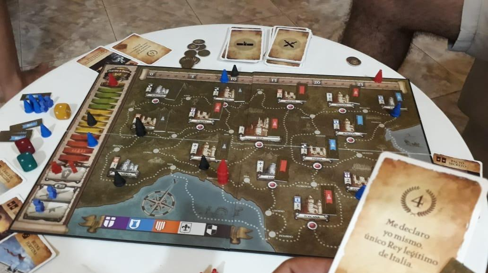

La magia se apoderó del Chaco
Un emocionante Campeonato Regional de Magic reúne a jugadores de todo el país

Sede local en resistencia: La mar en coche
El fin de semana pasado, Chaco se convirtió en el epicentro de la magia cuando se celebró el Campeonato Regional de Magic en la ciudad capital. El evento reunió a jugadores de todo el país para competir por el título de campeón regional y ganar una plaza en el Campeonato Nacional de Magic. Los jugadores demostraron sus habilidades y estrategias mientras lanzaban hechizos, criaturas y conjuros para superar a sus oponentes.
Exposición de cartas y venta de productos
El evento comenzó con una exposición de cartas de Magic, donde los asistentes pudieron ver algunas de las cartas más raras y poderosas del juego. Los jugadores y coleccionistas también tuvieron la oportunidad de comprar y vender cartas en un área designada. Muchos jugadores se encontraron socializando y hablando de sus cartas favoritas mientras buscaban nuevas adiciones a sus colecciones.
Torneos de Magic
Después de la exposición, comenzaron los torneos de Magic. Los competidores se inscribieron en el torneo de su elección, ya sea individual o en equipo, y se enfrentaron a otros jugadores en partidas llenas de acción y estrategia. Los jugadores demostraron sus habilidades mientras lanzaban hechizos, criaturas y conjuros para superar a sus oponentes.
Durante los torneos, los jugadores tuvieron que tomar decisiones rápidas y estratégicas en cada turno. Los espectadores animaron a los competidores y aplaudieron cada vez que se hizo un movimiento inteligente. Los ganadores de cada torneo recibieron premios, incluidas cartas de Magic y accesorios de juego.
Actividades adicionales
Además de los torneos y la exposición de cartas, también hubo otras actividades en el evento. Los asistentes pudieron disfrutar de comida y bebida en un área dedicada, mientras que los más pequeños tuvieron la oportunidad de participar en juegos y actividades especiales para niños. También se organizaron algunas demostraciones y talleres para los interesados en aprender más sobre Magic.
Conclusión
El Campeonato Regional de Magic en Chaco fue un evento emocionante que reunió a jugadores de todo el país para competir por el título de campeón regional y una plaza en el Campeonato Nacional de Magic. Los jugadores demostraron sus habilidades y estrategias en torneos llenos de acción y emoción, y los espectadores disfrutaron de la exposición de cartas y las actividades adicionales. ¡La magia se apoderó de Chaco durante el fin de semana!